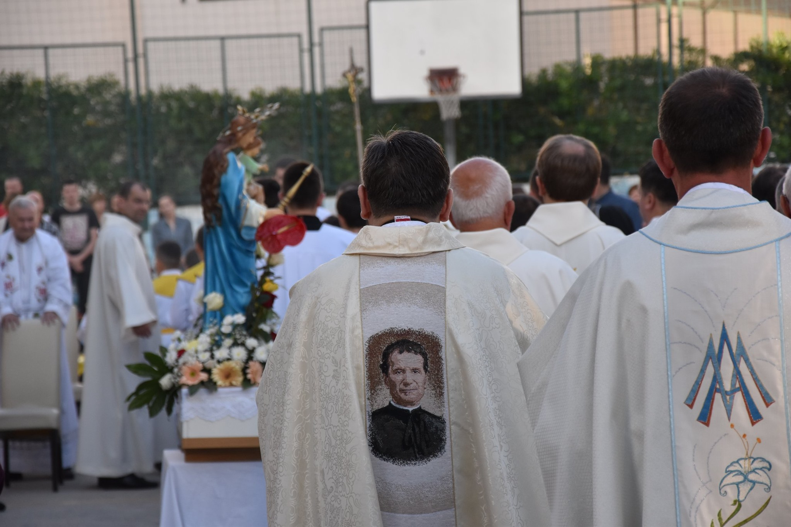
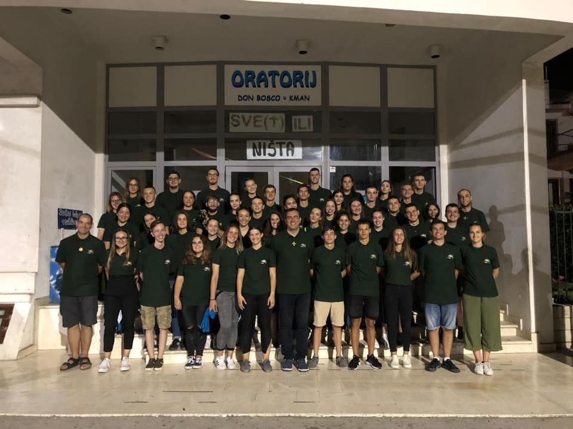
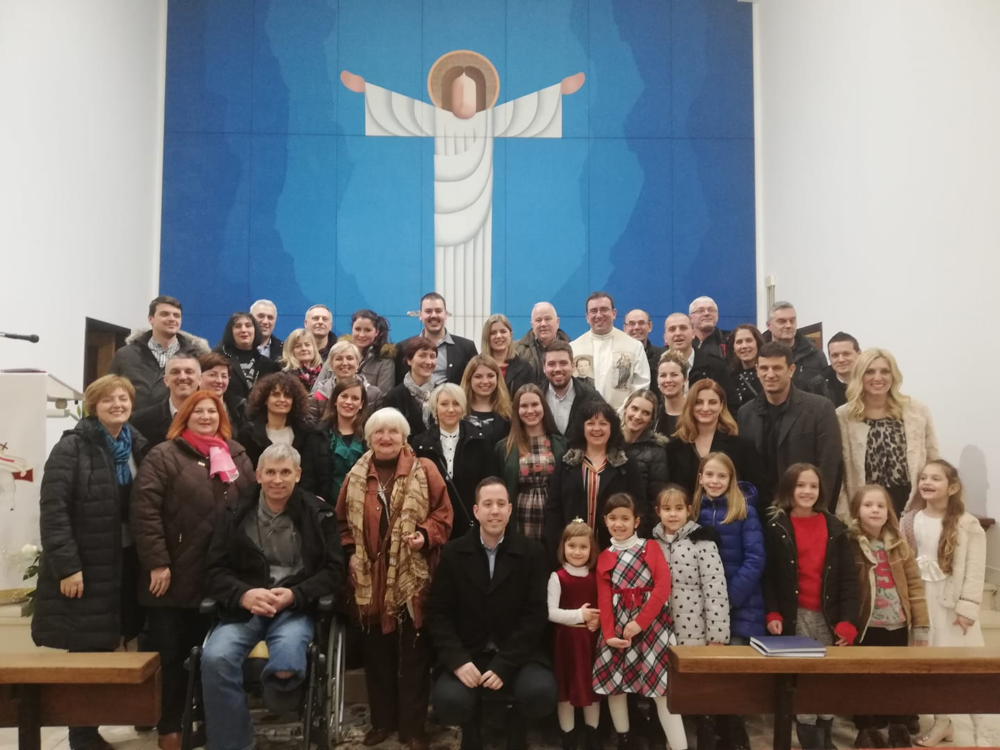

Salezijanci
Salezijanci su redovnička družba papinskog prava koju je u Torinu (Italija) 18. prosinca 1859. utemeljio sv. Ivan Bosco (Giovanni Bosco, 1815. - 1888.). Dekret pohvale Svete Stolice (privremeno odobrenje) salezijanci su dobili 1864., konačno odobrenje 1869., a konačno odobrenje konstitucija 1874. Članovi družbe se nazivaju salezijancima, a bave se kršćanskim odgojem adolescenata i mladih, posebice »najsiromašnijih i napuštenih«, no njihovo apostolsko djelovanje, osobito u misijama, prošireno je na sve slojeve društva.

Animatori
Salezijanski animatori su mladi srednjoškolci i stariji koji su odlučili dio svoga slobodnog vremena posvetiti radu s mladima, uključeni u zajednice i na različite načine, različitim sredstvima (glazba, liturgija, volontiranje, sport...) oduševljavaju druge za Krista u duhu Don Bosca. Voditelji su raznih inicijativa u zajednici, organiziraju sadržaj za djecu, srednjoškolce i mlade koji pristižu sa šireg splitskog područja, a nerijetko im se pridruže i kolege iz drugih oratorija diljem Hrvatske.

Salezijanci suradnici
Udruženje salezijanaca suradnika u Crkvi odobrila je Apostolska Stolica kao javno udruženje vjernika. Udruženje je također kao neprofitna udruga registrirano i upisano u Registar udruga Republike Hrvatske sa sjedištem u Zagrebu. Osobitu pažnju posvećuju mladima, posebno siromašnima, napuštenima ili žrtvama bilo kakve otuđenosti. U odgoju se koriste metodom dobrote, tzv. preventivnim sustavom, koji se temelji na uvjeravanju, a ne prisili, na prevenciji, a ne kažnjavanju. Surađuju s ustanovama koje se bave odgojem mladih.
